Знак «Сокол» — голова и глаз
UX-пакет 25.10 · доработка выбранного А (слова Юлая: «вариант А, но центральным элементом сделать глаз») · ← страница бренда
Круг 6 · глаз сокола (слова Юлая: «именно надо глаз сокола»)
Готового «глаза сокола» в открытых наборах нет, поэтому нарисованы четыре варианта: круглый глаз, светлая орбита, тёмная слеза вниз.
Совет 1 — А (глаз, кольцо, слеза): самый чистый и узнаваемый, держится в 16 px. Совет 2 — В (в круге): готовая иконка приложения. Б и Г — для выбора формы: Б ближе к настоящей морде, Г связывает сокола с камерой.
Честно: крупно любой из четырёх выглядит как объектив или метка на карте, пока рядом нет слова «Сокол» и птичьего контекста. Слеза даёт птичью примету, но не делает знак соколом сама. Если после просмотра нужен именно сокол, а не «глаз-объектив», следующий шаг — Б: добавить бровь и скошенный разрез глаза.
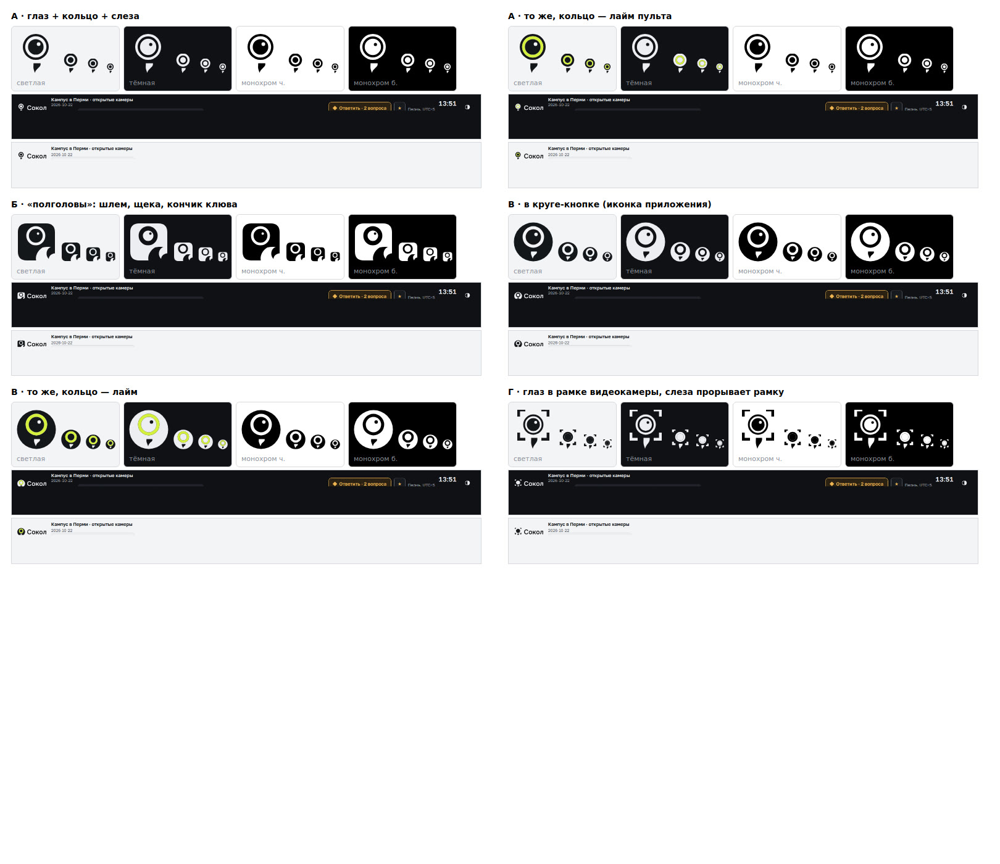
Геометрия: тёмное внешнее кольцо, светлая орбита, круглый глаз с бликом, слеза-капля вниз отдельно от кольца (зазор), чтобы не стала булавкой карты. Основа на 16 px: кольцо толще, блика нет.
Тёмный шлем-плитка со слезой слева, светлая щека справа, глаз с кольцом по центру, кончик клюва у правого края. Целиком ближе всего к реальной морде сапсана, но на 16 px щека и клюв сливаются.
Для иконки приложения: тёмный круг, внутри светлая орбита, глаз и светлая слеза. Читается лучше всех на 24 и 16 px.
Четыре угла видеокадра вокруг глаза, слеза выходит за рамку вниз: сокол и камера в одном знаке. Самый «продуктовый»; на 16 px рамка превращается в точки.
Обложка рапорта с лучшим знаком (А), крупно
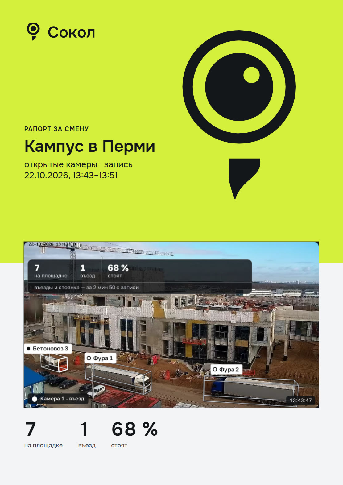
Что проверено
- Готовое: поиск в Iconify по falcon, hawk, raptor, eagle, eye и в game-icons (38 «глаз»-иконок) — глаза сокола или ястреба нет. «Глаз Гора» (Wadjet), all-seeing-eye, sheikah-eye и подобные не брали и не предлагаем.
- Опора на фото: «Peregrine falcon portrait» (Wikimedia Commons, автор Dhairya1308, CC BY-SA 4.0) — только как образец пропорций, в знак не вставлено. Из трёх снимков годен один, два других издалека. По нему: глаз почти чёрный и круглый, жёлтое кольцо тонкое, малярная полоса широкая под глазом и сужается книзу, от глаза отделена светлой щекой.
- Не «злой» взгляд: бровь и скошенный разрез не рисовали. Не «показать пароль»: в иконке видимости глаз миндалевидный с ресницами, у нас круг с орбитой и слезой; на 16 px риск остаётся у Г и В, их видно только в паре со словом.
- Лайм пульта — только кольцо глаза, в строках «с лаймом». Монохром — основа.
Круг 5 · готовые иконки сокола (слова Юлая: «плохие варианты, найди из готовых»)
Рисовать не стали: взяли 10 готовых знаков из открытых наборов с проверенной лицензией. Настоящих «соколов» в них мало, остальное орлы и ястребы.
Совет 1 — №8 game-icons «eagle-head» (голова с глазом, орёл). Совет 2 — №5 IconPark «eagle» (голова в профиль с глазом, орёл). Совет 3 — №3 game-icons «falcon-moon» (настоящий сокол в полёте, без глаза).
Честно: сокол с глазом, сидящий (№1, №2), на 16 px превращается в попугая или сову; крупно он хорош. Голова орла (№8, №5) читается сильнее, но это орёл: для «Сокола» подходит как хищная птица с острым взглядом, а не как вид. Если нужен именно сокол, берём №3 или возвращаемся к рисунку по образцу №8.
Подпись автора нужна у №3, №4, №8, №9 (CC BY 3.0): «Icon by Delapouite / Lorc, game-icons.net, CC BY 3.0» — в «О программе» и на странице сайта. У MIT и Apache 2.0 подпись в самом знаке не нужна, текст лицензии кладём в исходники. Все лицензии разрешают менять знак под себя.
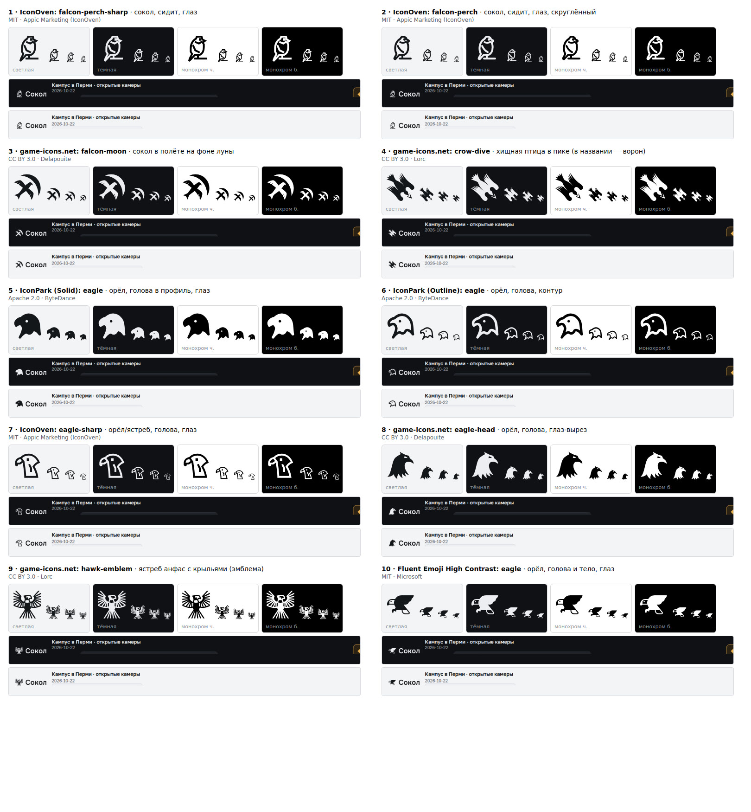
сокол, сидит, глаз. MIT, Appic Marketing (IconOven).
сокол, сидит, глаз, скруглённый. MIT, Appic Marketing (IconOven).
сокол в полёте на фоне луны. CC BY 3.0, Delapouite.
Единственный настоящий сокол в полёте (в названии falcon). Второй приоритет: глаза нет, зато силуэт.
хищная птица в пике (в названии — ворон). CC BY 3.0, Lorc.
орёл, голова в профиль, глаз. Apache 2.0, ByteDance.
Голова орла в профиль с глазом, спокойная линия; хорошо в тёмной теме. Лицензия самая свободная после MIT.
орёл, голова, контур. Apache 2.0, ByteDance.
орёл/ястреб, голова, глаз. MIT, Appic Marketing (IconOven).
орёл, голова, глаз-вырез. CC BY 3.0, Delapouite.
Голова с глазом: самый цельный и плотный знак, держится на 16 px. Но это орёл, не сокол.
ястреб анфас с крыльями (эмблема). CC BY 3.0, Lorc.
орёл, голова и тело, глаз. MIT, Microsoft.
Источник и лицензия
| № | Источник · имя | Что это | Автор | Лицензия | Подпись | Ссылка |
|---|---|---|---|---|---|---|
| 1 | IconOven · falcon-perch-sharp | сокол, сидит, глаз | Appic Marketing (IconOven) | MIT | не нужна; текст лицензии сохранить в исходниках | источник |
| 2 | IconOven · falcon-perch | сокол, сидит, глаз, скруглённый | Appic Marketing (IconOven) | MIT | не нужна; текст лицензии сохранить | источник |
| 3 | game-icons.net · falcon-moon совет 3 | сокол в полёте на фоне луны | Delapouite | CC BY 3.0 | нужна: «Icon by Delapouite, game-icons.net, CC BY 3.0» | источник |
| 4 | game-icons.net · crow-dive | хищная птица в пике (в названии — ворон) | Lorc | CC BY 3.0 | нужна: «Icon by Lorc, game-icons.net, CC BY 3.0» | источник |
| 5 | IconPark (Solid) · eagle совет 2 | орёл, голова в профиль, глаз | ByteDance | Apache 2.0 | не нужна в продукте; лицензию и NOTICE сохранить | источник |
| 6 | IconPark (Outline) · eagle | орёл, голова, контур | ByteDance | Apache 2.0 | не нужна в продукте; лицензию сохранить | источник |
| 7 | IconOven · eagle-sharp | орёл/ястреб, голова, глаз | Appic Marketing (IconOven) | MIT | не нужна; лицензию сохранить | источник |
| 8 | game-icons.net · eagle-head совет 1 | орёл, голова, глаз-вырез | Delapouite | CC BY 3.0 | нужна: «Icon by Delapouite, game-icons.net, CC BY 3.0» | источник |
| 9 | game-icons.net · hawk-emblem | ястреб анфас с крыльями (эмблема) | Lorc | CC BY 3.0 | нужна: «Icon by Lorc, game-icons.net, CC BY 3.0» | источник |
| 10 | Fluent Emoji High Contrast · eagle | орёл, голова и тело, глаз | Microsoft | MIT | не нужна; лицензию сохранить | источник |
Что не проверено и что не брали
- SVG Repo — сайт закрыт проверкой на бота (Vercel), лицензии каждой иконки получить не удалось: не проверено.
- Noun Project — без входа нет ни лицензии, ни скачивания: не проверено.
- OpenMoji — лицензия CC BY-SA 4.0 (обязывает открыть и нашу доработку): не брали. Simple Icons и логотипы «Falcon» с Wikimedia — чужие товарные знаки: не брали.
- Phosphor, Tabler, Lucide, Material Symbols, Font Awesome Free — по поиску через api.iconify.design иконки сокола, ястреба или орла там нет.
- Авторы game-icons (Delapouite, Lorc) определены по структуре репозитория game-icons/icons на GitHub; лицензия CC BY 3.0 — по странице набора. Данные Iconify на 25.10.2026.
Круг 4 · доработка головы (приёмка круга 3)
Основа — вариант 1; сделана одна доработанная версия 1′. Приёмка круга 3: вариант 1 читается как «хищная птица вообще», с прищуром («злая»); 3 («в круге») — только круглая аватарка, в пульт не ставить; 2 и 4 не приняты.
- Ус-«шлем»: светлая щека и горло вырезаны; тёмная капля спускается из-под глаза к нижнему краю — на нижнем контуре ступенька, видна и в 16 px.
- Глаз: круглый и крупный, зрачок по центру, плоской «крышки» нет.
- Затылок и клюв: острый угол заменён дугой; клюв короче примерно на 17 % и мельче по глубине; зубец и взгляд вправо сохранены.
- Тёмная тема: отдельный знак без зрачка, глаз — тёмный вырез.
Честно: на тёмном фоне знак без зрачка местами похож на череп, а капля — на клык или подбородок. Отличить сокола от орла и попугая без дизайнера удаётся только формой клюва и каплей. Второй подвариант не делал: спорных мест хватило на один рисунок.
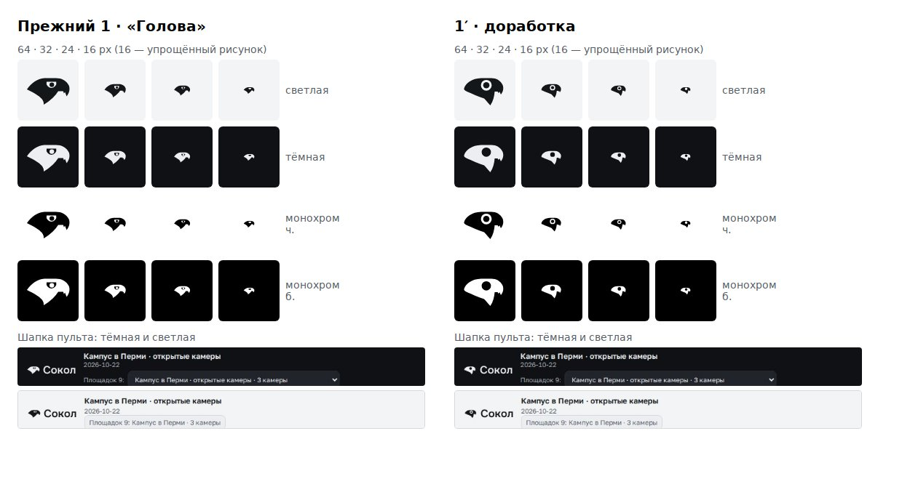
1′ · «Голова», доработка (приёмка круга 3)
Тот же вариант 1, правки по приёмке: светлая щека и горло вырезаны, тёмный «шлем» опускается из-под глаза каплей к нижнему краю (ступенька видна и в 16 px); глаз круглый и крупный, зрачок по центру, без плоской «крышки»; затылок — дуга; клюв короче на ~17 % и мельче; зубец сохранён. Для тёмной темы — отдельный знак без зрачка: глаз — тёмный вырез.
16, 32 и 64 px
В шапке пульта (монохром)
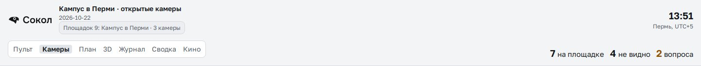
Обложка PDF-отчёта
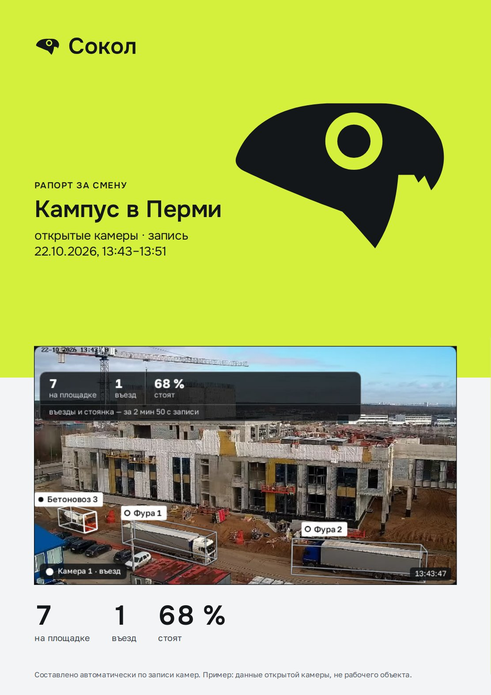
За: читается как голова птицы с «шлемом» сокола: капля-ус даёт силуэту ступеньку; глаз главный; без бровей-углов.
Против: в тёмной теме знак без зрачка (светлая голова с тёмным круглым глазом) местами смотрится как череп; капля под глазом может читаться как клык или подбородок; отличие сокола от орла и попугая всё ещё держится на форме клюва и капле — нужен дизайнер.
SVG: знак · лок-ап RU · LAT · знак для тёмной темы · LAT для тёмной


Голова сокола (круг 3, Юлай 9093)
Совет: вариант 1 «Голова». Юлай просил силуэт сокола, морду и глаз — это он: плоское темя, клюв-крюк с зубцом, «ус» лопастью вниз, крупный глаз с плоской бровью. Один силуэт, читается как хищная птица даже в 24 px, не похож на попугая (клюв узкий и вытянут) и не «злой» (бровь ровная, не углом).
Запасной — вариант 3 «Голова в круге»: для иконки приложения, аватарки и наклейки. Варианты 2 и 4 слабее: в 2 светлое пятно похоже на раскрытую пасть, в 4 без затылка клюв короче и ближе к попугаю.
Честно: образцы профи (CrowdStrike Falcon, Atlanta Falcons, Peregrine, знаки Gulf Air и Saudia, Dribbble) я не смотрел вживую — опирался на описание в задании; отличие сокола от орла у меня держится на узком клюве и «усе», это нужно показать дизайнеру. Для 16 px нарисованы отдельные упрощённые знаки: глаз — светлая вырезка без зрачка, без зубца-мелочи.
1 · «Голова»
Голова сокола в профиль: плоское темя, клюв-крюк с зубцом, «ус» — лопасть вниз-назад. Глаз с плоской бровью — в центре, зрачок тёмный.
16, 32 и 64 px
В шапке пульта (монохром)
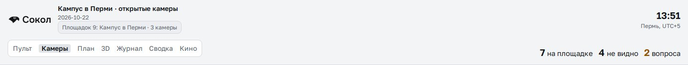
Обложка PDF-отчёта
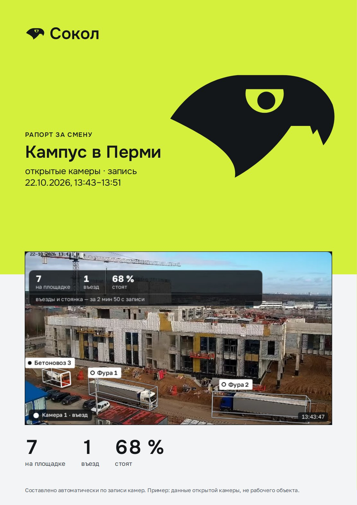
За: самая чистая и узнаваемая «птица-хищник»; один силуэт, держит печать, вывеску и вышивку; крупный глаз без бровей-углов; нет кольца с точкой в 16 px.
Против: это уже не «Пике», а портрет; от орла отличает только форма клюва и «ус» — рисунок нужно довести дизайнеру.


2 · «Глаз и щека»
Глаз и светлая щека — одна форма: глаз открыт вниз, к клюву; тёмный «ус» остаётся за ней как полоса маски сапсана.
16, 32 и 64 px
В шапке пульта (монохром)
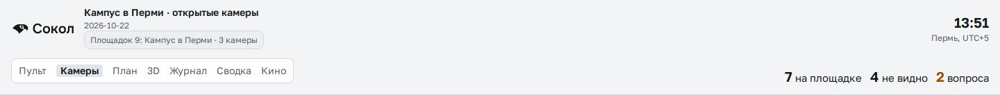
Обложка PDF-отчёта
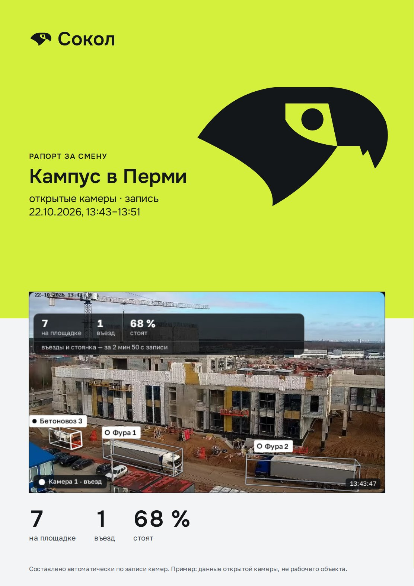
За: самый «сапсан»: маска из светлой щеки и тёмного уса; глаз крупнее, чем в 1; одна светлая форма вместо двух деталей.
Против: светлое пятно вокруг глаза похоже на раскрытую пасть или рану; в 16 px читается как «светлая вырезка», а не как глаз.


3 · «Голова в круге»
Та же голова — светлым вырезом в тёмном круге, глаз — тёмный. Знак-печать: годится для иконки приложения, значка, наклейки.
16, 32 и 64 px
В шапке пульта (монохром)
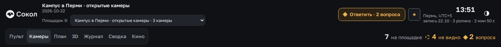
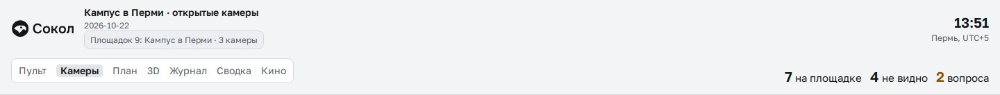
Обложка PDF-отчёта
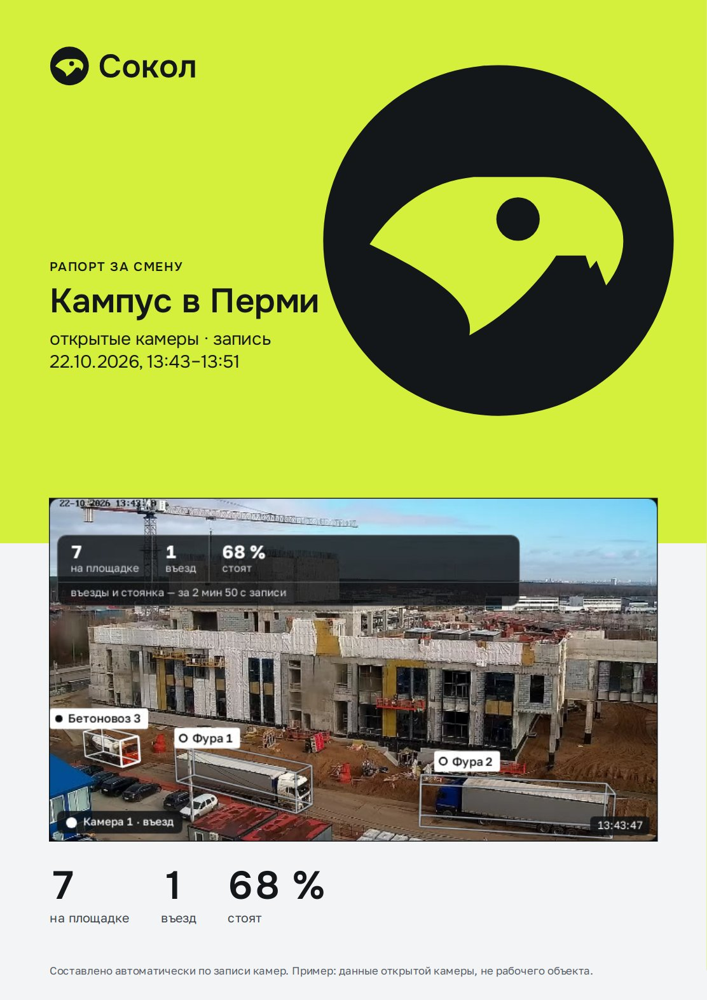
За: самая устойчивая в 16 px и в круглой аватарке; контур круга собирает знак; единственный, где глаз — крупный тёмный диск.
Против: тёмный круглый глаз внутри светлого — рядом с точкой «едет» из пульта; круг мельче головы на 22 %, поэтому голова чуть мельче.


4 · «Клюв и взгляд»
Только лицо: косой срез сзади, компактный силуэт, крупнее и мощнее.
16, 32 и 64 px
В шапке пульта (монохром)
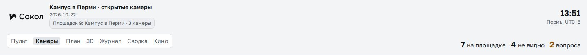
Обложка PDF-отчёта
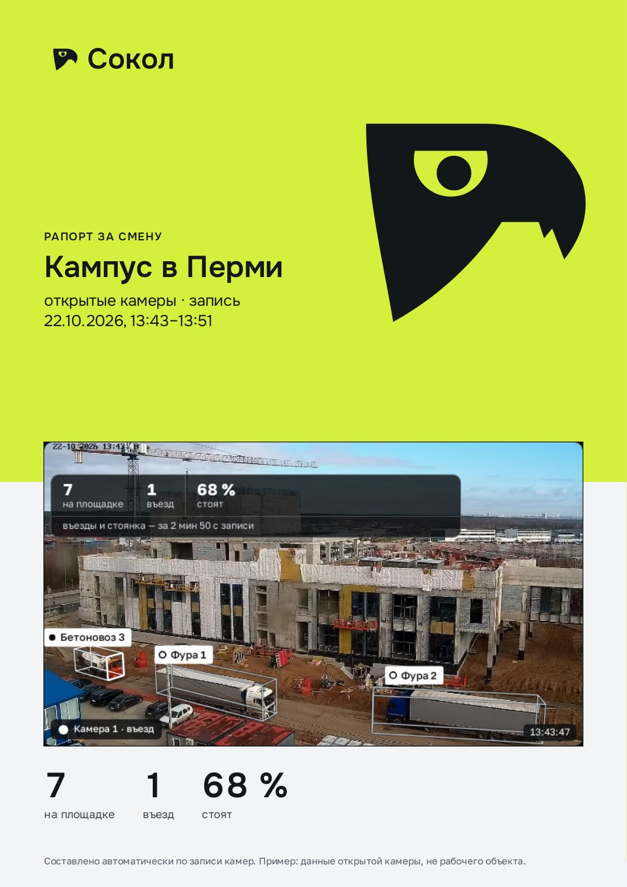
За: самый плотный и «брендовый»; хорошо в шапке 24 px.
Против: без шеи и затылка клюв выглядит короче — чуть ближе к попугаю; нужна доводка клюва.


Прежние варианты (круг 2)
Не голова, а тело и абстрактный глаз: Юлай посмотрел сравнение (9093) и попросил голову. Оставлены для сравнения.
Совет по прежним: вариант 2 «Пике сбоку». Это тот самый А, который выбрал Юлай, только повёрнутый в профиль: то же пике, силуэт-капля, а глаз с надбровной кромкой — главный элемент. Читается как хищная птица, не как самолёт.
Запасной — вариант 1 «Взмах»: самый чистый «глаз» и самый простой в 16 px, но это новый знак, птица в нём читается слабее.
Итог приёмки: номера на странице совпадают с файлами (1 = v1, 2 = v2). Иконка вкладки — от совета (вариант 2).
Кандидаты
1 · «Взмах»
Глаз, у которого верхнее веко — крыло в пике, нижнее — второе; ось повёрнута, остриё смотрит вниз-влево, как у пикирующей птицы. Зрачок отделён от век со всех сторон.
16, 32 и 64 px
В шапке пульта (монохром)
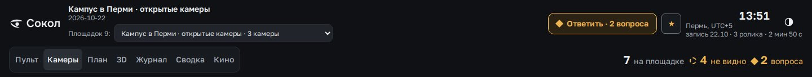
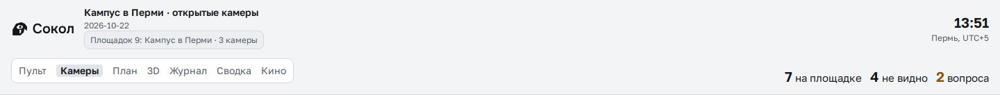
Обложка PDF-отчёта
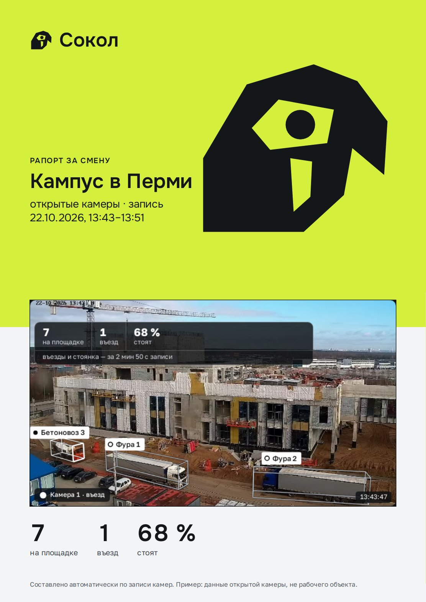
За: самый явный глаз и самый «взгляд»; одна простая форма, в 16 px зрачок крупнее и зазоры шире; не самолёт.
Против: это уже не «Пике», а новый знак на ту же идею; птица читается слабее, чем в варианте 2 — это «глаз с крылом», а не сокол.


2 · «Пике сбоку»
Тот же сокол в пике, вид сбоку: силуэт-капля, крылья прижаты, клюв крючком, глаз с надбровной кромкой — крупный центр знака.
16, 32 и 64 px
В шапке пульта (монохром)
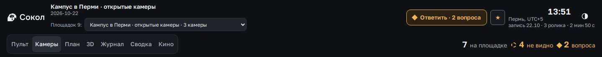
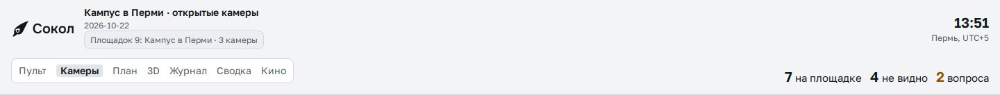
Обложка PDF-отчёта
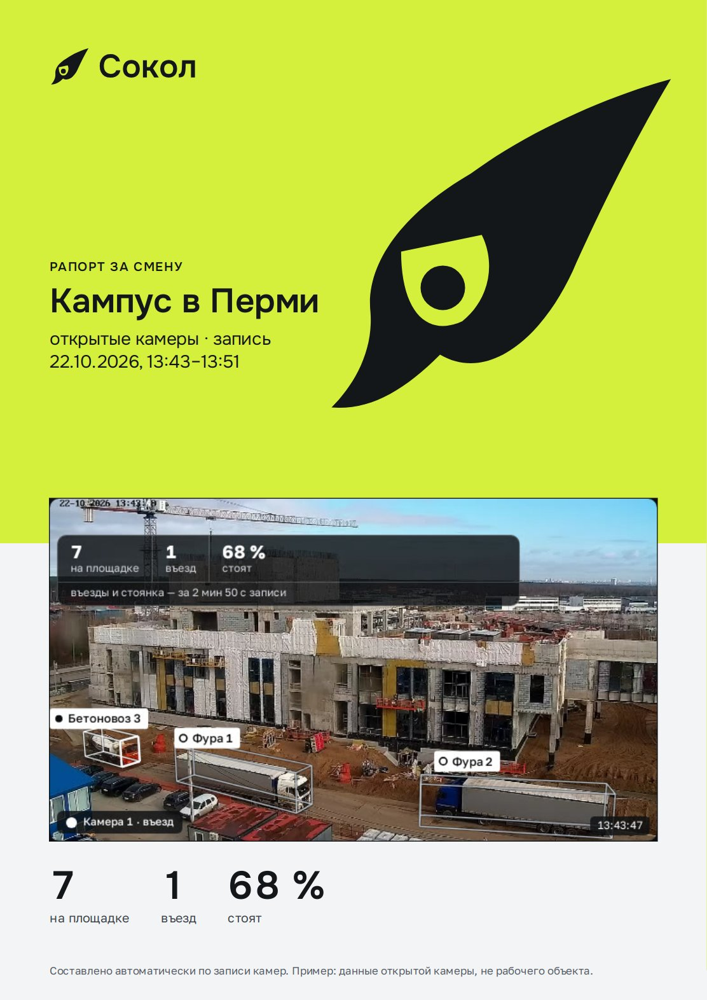
За: это именно А: тот же наклон и силуэт-капля, но глаз теперь главный; хищный взгляд и клюв — «птица», а не «ракета»; держит вывеску и печать.
Против: надбровная кромка (около 11°) делает взгляд серьёзным, но не злым; всё же показать заказчику; в 16 px остаётся капля с белым пятном-глазом.


Отброшено и почему
- «Пике сбоку» с ровным кольцом-глазом: превращается в птенца или воробья, а кольцо с точкой повторяет знаки состояний «едет» и «стоит» из пульта.
- «Пике» сверху с глазом на теле: птица сверху с круглым пятном — самолёт с иллюминатором. Поэтому «Пике сбоку».
- Миндаль в треугольнике и «Пике в зрачке»: «всевидящее око» (масонский знак) и всё тот же силуэт «истребителя».
- Два первых «Профиля» (голова с круглым затылком и круглым глазом-кольцом): короткий толстый клюв и круглая голова — попугай; кольцо с точкой — знак состояния. Новые головы (круг 3) переделаны: узкий вытянутый клюв, плоское темя, ровная бровь.
- Кольцо-объектив с прицелом: читается как лупа, птицы нет.
- Капля или «ус» под глазом: уводит в глаз Гора — в «Взмахе» их нет.
Цвет и правило «в пульте монохром»
- В пульте знак — цвета текста (
--text), зрачок — тот же цвет. Лайм (#D4F03C, у вас «работает») и янтарь (#F0B451/#8F5200, «внимание») в знак не заходят. - Лайм — только фон: плашка обложки и подложка favicon; зрачок и глаз всегда цвета знака (лайм в пульте и отчётах значит «работает») (контраст лайма на
#0F1114— 14.7:1). Тёмный на лайме — 14.0:1. - Мерка «не спорит с состояниями»: в 16 и 32 px знак — одноцветный, акцентной детали нет; пятно зрачка не похоже ни на сплошную точку «едет», ни на кольцо «стоит» — размер зрачка больше точки счётчиков в строке машины (проверить в реальной строке при внедрении, не проверено).
Товарные знаки (классы 9 и 42)
Не проверено. Поиск по картинке («глаз + птица», Венская классификация) — только в интерактивных реестрах ФИПС и WIPO Global Brand Database; из сервера они недоступны, а общий поиск в сети по рисунку ничего не находит (ищет по словам). Нужно: один раз пройти поиск по фигуративным элементам «птица» и «глаз» в классах 9 (ПО, оборудование) и 42 (ПО как услуга) и отдельно слово «Сокол» — у слова, скорее всего, много владельцев. До показа это не блокирует, до подачи заявки — обязательно.
Следующий шаг
Выбор Юлая: голова 1–4 или прежние 1–2. Кривые перед запуском доводятся вручную. После выбора: замена SVG в шапке четырёх страниц и favicon — около 30 минут, после показа 26.10.
Исходники: .artifacts/sokol/ux-2510/brand/src/marks_head.py, marks_eye2.py, eye.py.